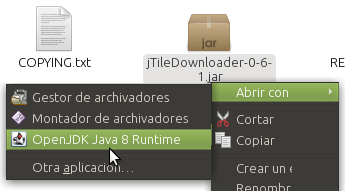
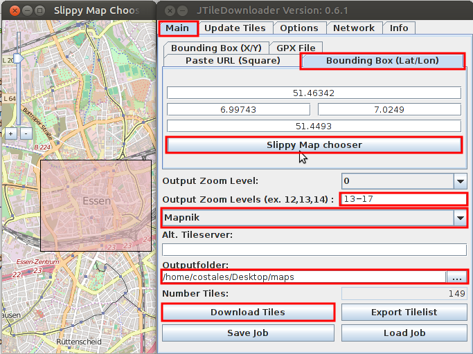
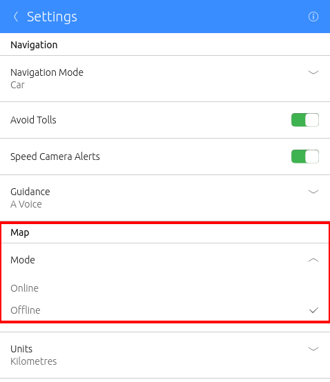

You can download maps from any map server with any app!
We'll use jTileDownloader.
You can do use downloadosmtiles too on Terminal.
jTileDownloader is a java aplication ;)
~$sudo apt-get install openjdk-8-jdk unzip
Check here you're downloading the last version
~$cd ~
~$wget http://svn.openstreetmap.org/applications/utils/downloading/JTileDownloader/trunk/release/jTileDownloader-0-6-1.zip
~$unzip jTileDownloader-0-6-1.zip
~$rm jTileDownloader-0-6-1.zip
~$cd jTileDownloader
~$chmod +x jTileDownloader-0-6-1.jar
Use your file browser to open ~/jTileDownloader/jTileDownloader-0-6-1.jar with java:
Main > Bounding Box > Slippy Map chooser > Choose the map.
Output Zoom Levels: Your desired zooms, uNav needs at least: 13,16,17
Map: Use Mapnik or Alt. Tileserver
For example, if you want Mapquest: http://otile2.mqcdn.com/tiles/1.0.0/map/
Outputfolder: Download folder.
And just click on Download Tiles button.
Move that maps folder to ~/.local/share/navigator.costales into the phone.
You can move to Downloads folder and then from phone Terminal:
~$mv ~/Downloads/maps ~/.local/share/navigator.costales
Open uNav and go to Settings. Choose Offline maps:
It's done |o/